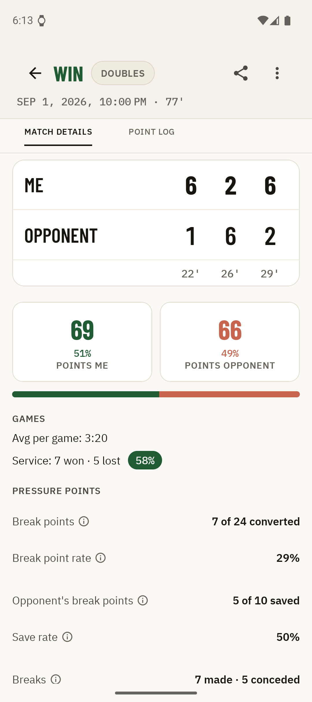
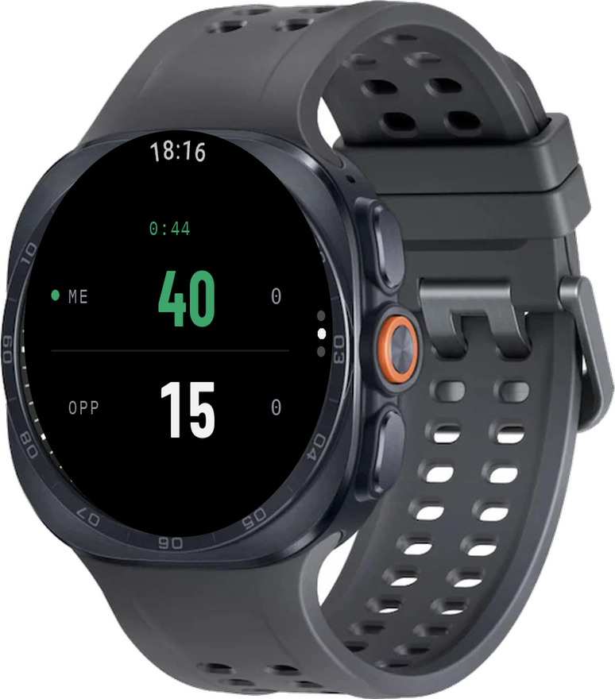

One tap per point on your watch. Friends follow along live. After the match, the full breakdown is waiting on your phone.
Why Kortscore
Keeping score must not become your second opponent. So as little as possible happens on court – and as much as you like afterwards.
No menu, no phone out of your bag, no looking away from the ball. One tap on the watch counts the point, the app works out the rest: games, sets, tiebreaks, change of serve.
One link is enough, and family and friends see every point in real time in their browser – no app, no account, wherever they are.
Break points, pressure points, service games, point history, game times: after the match it is all there on your phone, without you having done a thing for it while playing.
01 During the match
Serve. The watch is ready, all you have to do is play.
02 On your paired phone
The watch counts, your own paired phone follows along. Over Bluetooth, without internet. Perfect when someone is watching from the fence.
03 For everyone else
From your phone you share the running match as a link. Family and friends follow the score in real time in their browser or in the app, point by point. No account of their own required.

04 After the match
Every point is recorded as an event. That makes for more than a final score: break points, set and match points, deuce games, longest run of points – the moments where the match was decided.
And across all your matches sit the overall statistics: win rate, form over the last ten matches, win-rate trend, record by weekday and time of day – singles and doubles kept apart.
05 What the app costs
Kortscore costs nothing and shows no ads – no banner, no ad SDK, the same for everyone. If you want to dig deeper, there is Kortscore Plus: a one-off purchase, not a subscription.
| Feature | Free | Plus |
|---|---|---|
| No ads | ||
| Score entry from the watch | ||
| Unlimited match archive | ||
| Result and basic stats for every match | ||
| Live sharing: link, watching, point history | ||
| Manual backup and restore | ||
| Detailed statistics Pressure points, watch battery, point-history chart | ||
| Match progression Set by set, game by game | ||
| Auto backup backs the archive up unattended |
Plus is a one-off purchase, not a subscription – it lasts, and after a reinstall the app restores it quietly. We do not sell you the result of your own match back, and protecting you from data loss never costs money: Plus only buys the convenience of the backup happening on its own.
06 Privacy
Free & ad-free
Kortscore costs nothing, shows no ads and needs no account. Install it, pair your watch, start counting. Friends and family need neither a watch nor the app: to follow along, the link in a browser is enough.

Opens the Play Store. Questions before you install? swordistudios@gmail.com